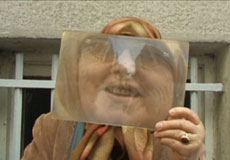

|
SALON ISTANBUL
DEVRIM KADIRBEYOGLU
Visa Applicants | T 2010 | 6’07’’
Kamera: Özcan Vardar
devrimkadirbeyoglu.com
I was born in Istanbul, Turkey, during an era of violent chaos and a military coup in which thousands of people, mostly intellectuals, were imprisoned for their ideas concerning social justice. Growing up in this politically and ideologically charged environment kept me close to the threat of death and in tune with what was going on around me. It was never easy for me to express my feelings through words, partly due to my female identity, but also due to the strict leadership and undercurrent of political Islam in the developing country in which I was raised. The possibility of sudden loss, the brutality of people’s approach to their surroundings and society’s aggressiveness urge me to synthesize. Exploring the continuous struggle and the order of our universe, I use multiples and repetition to undermine hierarchical relations between objects. The work resonates as a theatrical extension of daily life, where viewer becomes the performer, reminding us that we all have social roles to fulfill. I like the work to be open to different interpretations, given all diverse qualities of each viewer. – Devrim Kadirbeyoglu
Kadirbeyoglu works with different mediums to portray issues of identity in contemporary society. This year her work has been part of exhibitions in Germany, Italy and Turkey. She has had a Solo Exhibition in the Netherlands. Kadirbeyo?lu’s second Solo Exhibit opens on September 29th, 2010 at ALANIstanbul in Turkey. In 2009, her installation was part of Seriously Ironic – Positions in Turkish Contemporary Art Scene held at the museum Le CentrePasquArt in Switzerland. The same year her interactive sculptures were represented by Emmanuel Fremin Gallery at the Bridge Art Fair in New York. Also in 2009, the artist completed the Residency Program at Platform Garanti, Contemporary Art Center in Istanbul. Devrim Kadirbeyoglu currently divides her time between living and working as an artist/curator in New York and Istanbul.
zurück
|